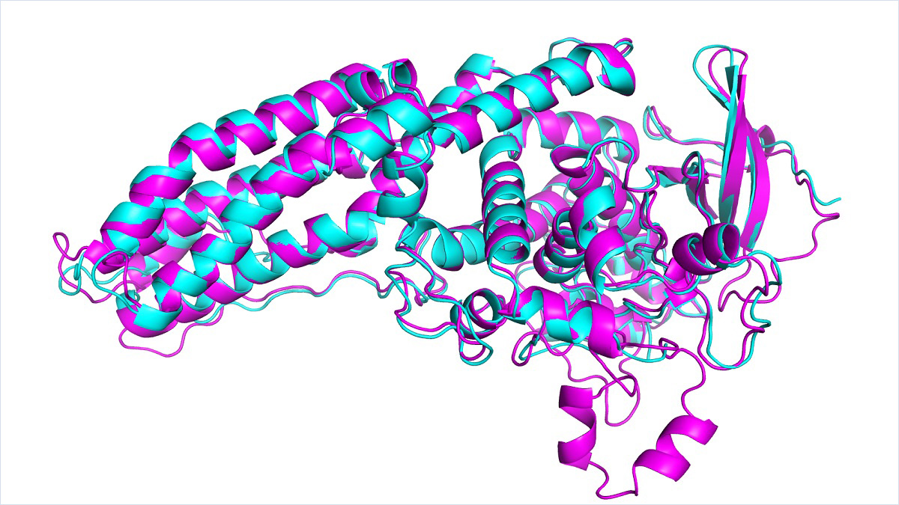

Chapter 1
Introduction to Artificial Neural Networks
It is quite apparent that life imitates life and engineers are inspired by nature.
It seems only logical, then, to look at the brain’s architecture for inspiration on how to build an intelligent machine as it is the only intelligence that we know of.
This is the logic that sparked ANNArtificial Neural NetworksArtificial Neural Networkss, which are
MLMachine LearningMachine Learning models inspired by the networks of
We will treat this chapter as a formal introduction to ANNArtificial Neural NetworksArtificial Neural
Networks, starting with a tour of the very first ANNArtificial Neural NetworksArtificial Neural
Networks architectures and leading up to
For most of your use cases, using keras will be enough.

AlphaFold 1 (2018) placed in the overall rankings of the CASP [4] Critical Assessment of Structure Prediction. in December 2018. It was particularly successful at predicting the most accurate structures for targets rated as most difficult by the competition organizers, where no existing template structures were available from proteins with partially similar sequences.
AlphaFold 2 (2020) repeated this placement in the CASP14 competition in November 2020. It achieved
a level of accuracy much higher than any other entry [†]Stoddart, C. Structural biology: How proteins
got their close-up. Knowable Mag. (2022). It scored above 90 on CASP’s global distance test (GDT) for
approximately two-thirds of the proteins, a test measuring the similarity between a computationally
predicted structure and the experimentally determined structure, where 100 represents a complete
match [†]Heaven, W. D. DeepMind’s protein-folding AI has solved a 50-year-old grand challenge of
biology. MIT Technol. Rev. 30, 1–2 (2020). The inclusion of
1.1.1 Biological Neurons
1.1.2 Logical Computations with Neurons
1.1.3 The Perceptron
1.1.4 Multilayer Perceptron and Backpropagation
1.1.5 Regression MLPs
1.1.6 Classification MLPs
1.2 Implementing MLPs with Keras
1.2.1 Building an Image Classifier Using Sequential API
1.2.2 Creating the model using the sequential API
1.2.3 Building a Regression MLP Using the Sequential API